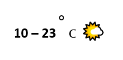

על פי קלט של תאריך ומיקום (ברירת מחדל של המשתמש או מיקום של אירוע ביומן) יופעל API לאתר מזג אויר חינמי פתוח כלשהו ואביא את הנתונים הרלוונטיים. במידה והתאריך הינו מעבר לגבול התחזית ניתן אולי להביא ממוצע היסטורי או משהו בסגנון.
בהמשך ניתן אולי גם להציג עם תמונה כלשהי הרלוונטית לאותו מזג אויר.
לא נדרשים שינויים בבסיס הנתונים.
7 לייקים
אם תשמורי את מיקום המשתמש בדיבי תוכל להציג בלי לשאול אותו מאיפה הוא, למה שלא תוסיפי את המיקום בדיבי?
נקודה מעניינת, וחשובה  לדעתי נכון שהמיקום ינוהל כחלק ממסך העדפות משתמש שיכיל עוד נתונים. טיקט נפרד ובעל זכות קיום משל עצמו - מי מרים את הכפפה?
לדעתי נכון שהמיקום ינוהל כחלק ממסך העדפות משתמש שיכיל עוד נתונים. טיקט נפרד ובעל זכות קיום משל עצמו - מי מרים את הכפפה?
מבקשת בדיקה
-
מה ההצעה כוללת?
על פי קלט של תאריך ומיקום (ברירת מחדל של המשתמש או מיקום של אירוע ביומן) אתממשק לאתר מזג אויר חינמי פתוח כלשהו ואביא את הנתונים של טווח טמפ’ לפי העדפה F/C ואייקון תואם. במידה ואין תחזית (תאריך הינו מעבר לגבול התחזית או לחילופין תאריך עבר) יוחזרו נתונים היסטורים - איך אתם מתכוונים לממש אותה? מפורט בסעיף 1
- אם היא כוללת שינויים בקוד: אילו שינויים? איפה הם יכנסו? מתודה חדשה שתיכתב בקובץ נפרד (weather.py תחת app/external)
- אם היא כוללת שינויים במסד הנתונים: אילו שינויים? הטיקט עצמו אינו דורש שינויי במסד
- האם היא דורשת frontend? איך הוא יראה? ציירו mock. 
- אילו טסטים יגרמו לטיקט להיחשב כ"עובד", ויאפשרו לנו לסגור את הטיקט ולהגדיר את המשימה כהושלמה? בדיקה אל מול תאריך נוכחי, תאריך עוד 3 ימים, תאריך עוד חודשיים (תחזית מבוססת על ממוצע היסטורי) ותאריך עבר (מידע הסטורי), בדיקה אל מול תאריך לא חוקי.
נשמע מצוין. יכולה להתחיל לעבוד על זה, בהצלחה!